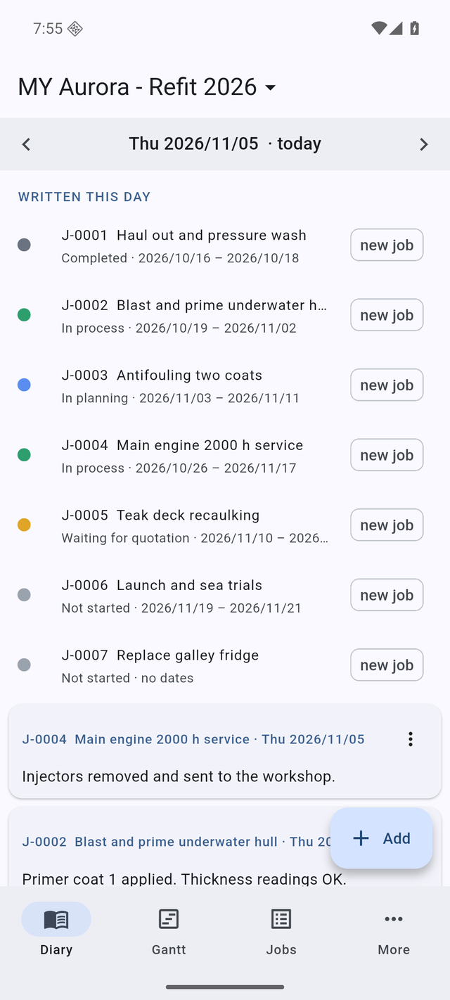
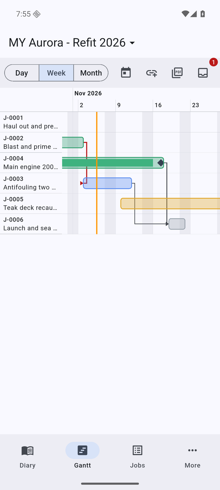
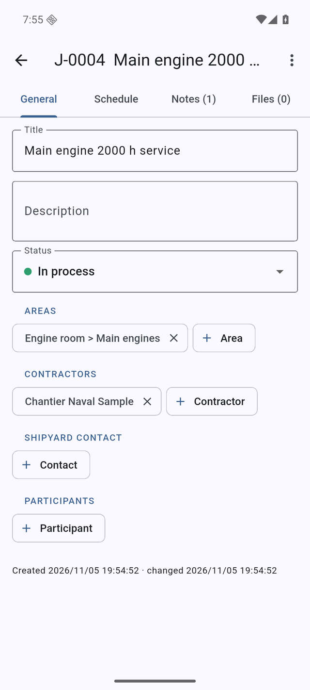

Diary
Pick a day and see what was written that day, the jobs under way, the ones past their end date and what is coming up. Swipe to the next day.
A job diary and a Gantt chart in your pocket. Write down what happened today, attach the photos and the quotes, link the jobs that wait for each other — and send a clean PDF report when someone asks where things stand.



Add a job in seconds on deck, fill in the details later at the desk.
Pick a day and see what was written that day, the jobs under way, the ones past their end date and what is coming up. Swipe to the next day.
Day, week or month view, with phases, pauses and milestones. Link a job to the one it waits for; if the dates clash the arrow turns red. Move a job and the app offers to move the jobs that depend on it.
Take a photo, pick one from your library, or pick a file from iCloud Drive, Google Drive or OneDrive. On Android you can also share a quote straight from your mail into a job's note. Files are named after their job, so they stay findable.
One project per boat or per yard period. Switch between them, archive the finished ones and bring them back whenever you need them.
The Gantt plus every job with its notes and attachments, made on the phone and sent by mail, AirDrop, WhatsApp or anything in the Share menu.
Dated backups are made by themselves: every one of the last 7 days, then one per week for 4 weeks and one per month for 4 months. Restore any of them — the current state is saved first, so a restore can be undone too.
Everything runs on the phone, in a dry dock, an engine room or mid-ocean. Lock it with Face ID or your fingerprint if the job list is nobody else's business.
Keep the whole yard period in one place, switch between boats, and answer "where are we?" with a report instead of a phone call.
Keep a project for this yard period and start the next one before you arrive. Hand a project over as a single file when you leave.
Days in Dock has no server and includes no analytics or advertising. Your jobs, notes and files are stored on your phone. Reports, exports and backups leave it only when you share them yourself. Read the privacy policy.